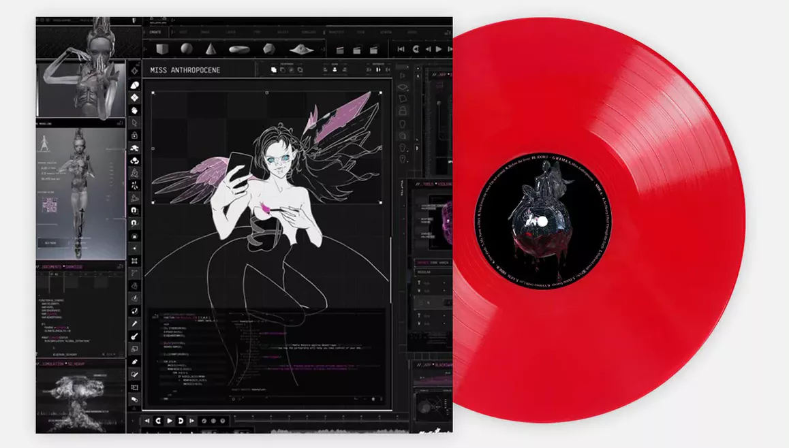

⋙ MISS ANTHROPOCENE ⋘
En 2020, la cantante canadiense Grimes lanzó su quinto álbum de estudio, "Miss Anthropocene". El álbum es una exploración de la relación entre la humanidad y el medio ambiente, y las letras abordan temas como la destrucción del planeta, la tecnología y el cambio climático. La música del álbum es una mezcla de géneros que incluyen electrónica, pop y experimental, y presenta un sonido oscuro y emotivo.
Una de las canciones más destacadas del álbum es "Delete Forever", una canción pop acústica con letras que abordan la epidemia de opioides en los Estados Unidos. La canción es un ejemplo de cómo Grimes utiliza su música para abordar temas sociales y políticos importantes.
Otra canción destacada es "4ÆM", una canción pop electrónica con una letra que se refiere a un futuro postapocalíptico. La canción es un ejemplo de cómo Grimes utiliza la música para explorar temas relacionados con la tecnología y la ciencia ficción.
El álbum también incluye colaboraciones con otros artistas, como "Violence", una canción en colaboración con el DJ y productor británico i_o. La canción combina la voz emocional de Grimes con una producción electrónica oscura y pesada, creando una canción que es al mismo tiempo emotiva y poderosa.
En general, "Miss Anthropocene" recibió críticas positivas por su originalidad y ambición. El álbum es un ejemplo de cómo Grimes utiliza su música para abordar temas importantes y actuales, y cómo la música puede ser una herramienta para la reflexión y el cambio social. La combinación de música electrónica, pop y experimental crea un sonido único e inquietante que complementa las letras oscuras y emotivas del álbum. En conjunto, "Miss Anthropocene" es una exploración fascinante y ambiciosa de la relación entre la humanidad y el medio ambiente.